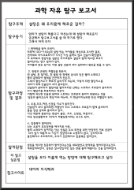
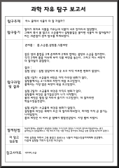
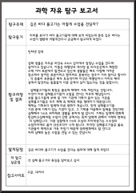

탐구 보고서


밑에 이미지를 클릭하면 저장할 수 있어요!

-탐구동기
설탕은 왜 우리몸에 해로운 걸까?
-탐구동기
엄마가 설탕이 해롭다고 하셨는데 왜 설탕이 해로운지 궁금해서 탐구보고서를 쓸 때 하기로 했다. 그래서 하게 되었다.
탐구 과정 및 결과
결과:
1. 면역력을 떨어 뜨린다.하루에 100~150g의 설탕 먹는 아이들을 대상으로 조사한 결과, 면역세포 마이크로파지가 5시간 이상
꼼짝도 않고 있음이 확인됐다.또 토마토의 항암작용 성분인 라이코펜도 설탕과 함께 먹으면 효과가 떨어진다는 연구 결과가 있다.
아이들의 잦은 감기도 이런 설탕 성분의 과다 섭취에서 원인을 찾을 수 있다.......

-탐구동기
어느 물에서 식물이 더 잘 자랄까?
-탐구동기
1. 탐구 동기
엄마가 취미로 식물을 키우는데 식물이 너무 안자라서 답답했다. 그래서 혹시 물 말고도 소금물이나 설탕물같은...
탐구 과정 및 결과
-준비물:물, 소금물, 설탕물, 식물씨앗
-실험과정:
1. 같은 양의 물컵을 3개 준비하여 2개의 컵에는 설탕과 소금을 첨가한다.
2. 각각 3개의 물을 티슈에 부어 식물 씨앗을 놓는다......

-탐구동기